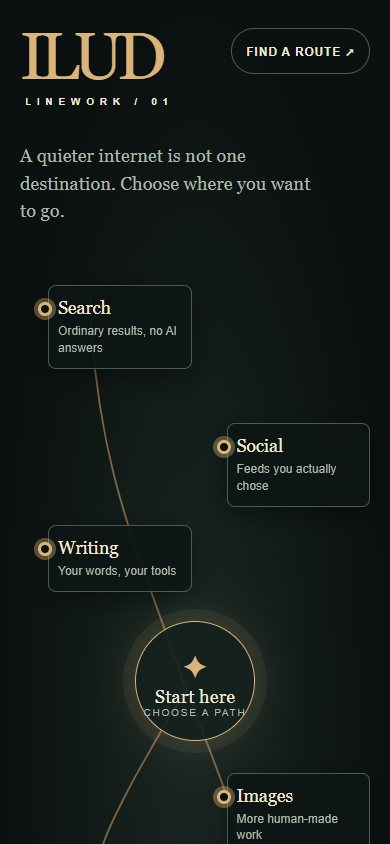
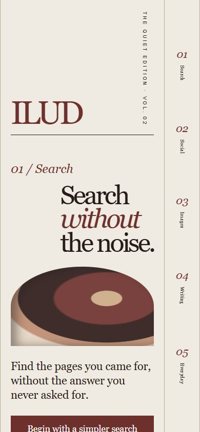
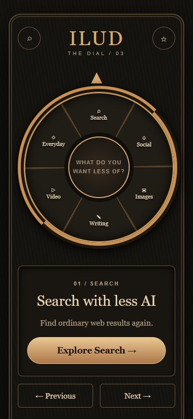
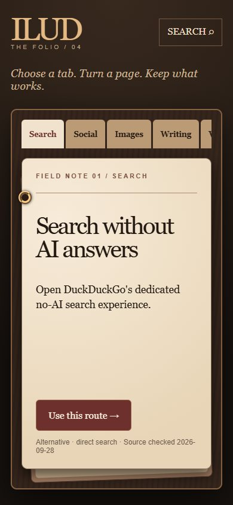
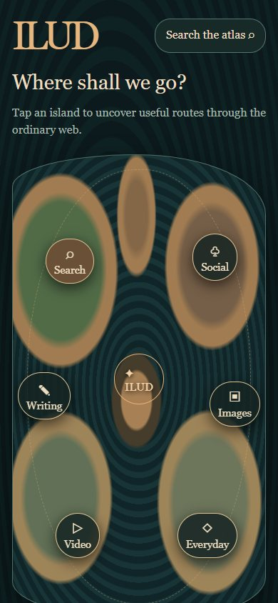
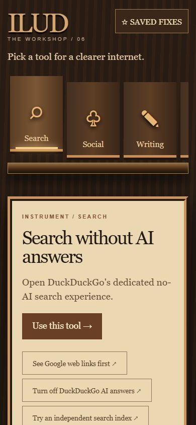
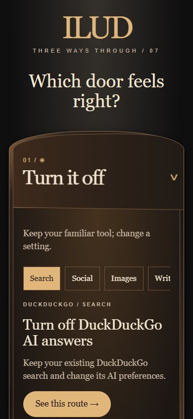
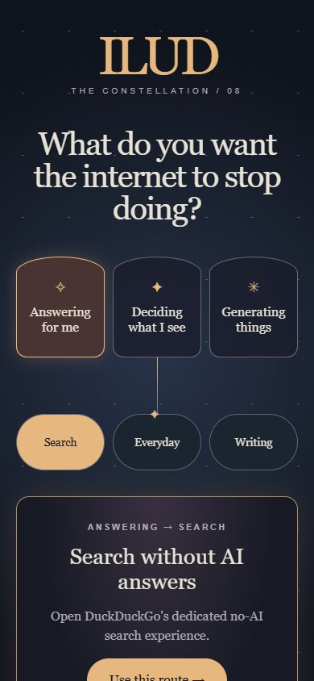
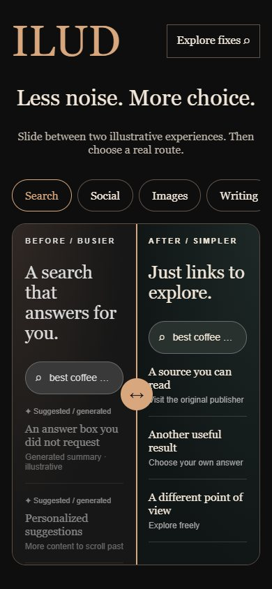
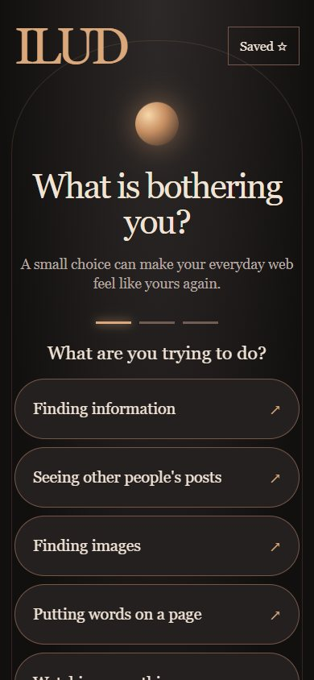

A human internet
is still here
EST. 2026
The internet,
on your terms.
Search, read, watch and explore with less AI you didn't ask for. Find an official switch, an honest alternative, or a useful path around the noise.
Find your first routeChoose your way in
01 — 10 / THE COLLECTION
Linework
Trace a path from everyday activity to a practical fix.
Follow a route ↗
The Quiet Edition
Browse fixes like stories in a carefully edited publication.
Open the issue ↗
The Dial
Turn a tactile selector to choose what you want less of.
Turn the dial ↗
The Folio
Handle a stack of field notes, one useful route at a time.
Turn a page ↗
The Atlas
Travel between islands of search, images and daily life.
Explore the atlas ↗
The Workshop
Take a tool from the rack to make a familiar task simpler.
Choose a tool ↗
The Doorways
Turn it off, avoid it, or use something else. Open a door.
Open a door ↗
The Constellation
Start with what bothers you and follow an illuminated branch.
Follow the light ↗
Before / After
Slide between a busy view and the calmer route you want.
See the difference ↗
The Wayfinder
Answer two small questions and arrive at a useful option.
Find your way ↗